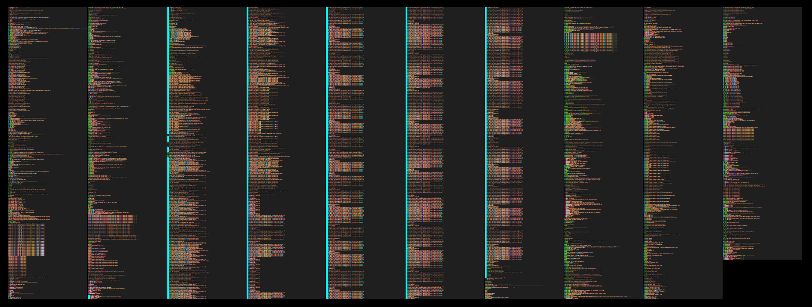
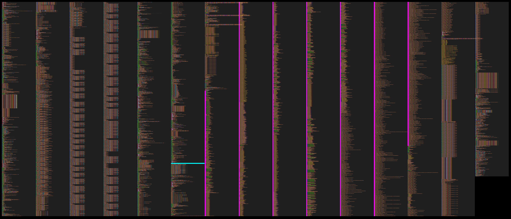

Created , last changed
tinygrad tries to be simple. I like deleting things. See if I can't help delete in tinygrad. Seems to be a new and adventurous world on the other side.
tinygrad dev exploration
Direction
trace execution of a tinygrad script
- steps:
from tinygrad.tensor import TensorTensor([1,2,3])Tensor([1,2,3]) + 2- `(Tensor([1,2,3]) + 2).tolist()
read tensor.py
explore anything unfamiliar
condense any writing
create more abstract layers, current writing is one layer above code. should eventually connect all the way to the mission.
python inliner for tinygrad?
More refined
Less refined
tinygrad inliner
from reading its not obvious what happens
could miss parts
can't keep track of values
reading too much that is irrelevant
inlined code would be a practical story through a structure of relationships
tinygrad code lays out the structure directly
- write an executable python file that fulfills the same function as the traced script without calling functions
- classes are maintained (Tensor, LazyBuffer(?))
- function variables are renamed to be unique
- function calls = indented comment = function name, source file, line number
- return = indented comment
- for loops and comprehensions are only shown once
tinycorp mission
accelerate, commoditize the petaflop
improve soft-hardware interface for tensor compute first
funded by love and tinyboxes
factory -> soft (tinygrad), hard (tinybox, tinychip?)
product -> compiled models?
tinygrad model --> friendly C --> standalone would be (is?) nice
encountered python
__slots__ lists the expected class attributes for fast access and memory savings more
all() and any() for evaluating multiple bools.
WeakValueDictionary for accessing values that can be garbage collected like the reference isn't there
if there is an argument in a function definition like *atuple, it becomes optional and returns an empty tuple (or list?) if not given
deque from collections = data structure for efficient insertion and deletion from two ends of a list.
Importing Tensor
from tinygrad.tensor import Tensor
sets the stage with 3749 lines of tinygrad code as determined through sys.settrace (2024-07-08 17:27)

Mostly imports and the construction of the PatternMatcher in tinygrad/codegen/uops.py (marked with cyan left border)
13: helpery.py
- makes
UandTTypeVars - determines if the computer runs OSX to set the location of tinygrads cache
- sets and caches environment variables as
ContextVarobjects.- DEBUG, IMAGE, BEAM, NOOPT, JIT
- WINO, THREEFRY, CAPTURING
- GRAPH, GRAPHPATH, SAVE_SCHEDULE, RING
- MULTIOUTPUT, PROFILE
- this does not cover all environment variables relevant to tinygrad, not even those mentioned in the docs as global variables
- Global Counters:
global_ops,global_mem,time_sum_s,kernel_count,mem_used - ProfileLogger (?)
- sets up cache db path, cachelevel and version (?)
206: dtype.py
ConstType = Union[float, int, bool]- declares dtypes as DType Objects and some aliases:
- bool, int8, uint8, int16, uint16, int32, uint32, int64, uint64, float16, bfloat16, float32, float64
- half = float16; float = float32; double = float64
- uchar = uint8; ushort = uint16; uint = uint32; ulong = uint64
- char = int8; short = int16; int = int32; long = int64
- sets default float by environment variable else
float32and default intint32 promo_latticethat defines how different dtypes get promoted, presumably when different dtypes meet in an operation.DTYPES_DICTandINVERSE_DTYPES_DICTto translate between tinygrad dtypes and their names like "bool": dtypes.bool
367: shape/symbolic.py
sint = Union[int, Variable, MulNode, SumNode]render_python: Dict[Type, Callable[..., str]]where the callables return a string representing the Object inType.
581: ops.py
- tinygrads ops are defined:
UnaryOps(Enum):EXP2,LOG2,CAST,BITCAST,SIN,SQRT,NEG,RECIPBinaryOps(Enum):ADD,MUL,IDIV,MAX,MOD,CMPLT,CMPNE,XOR,SHL,SHR,OR,ANDTernaryOps(Enum):WHERE,MULACCReduceOps(Enum):SUM,MAXBufferOps(Enum):LOAD,CONST,STORELoadOps(Enum):EMPTY,CONST,COPY,CONTIGUOUS,CUSTOM,ASSIGN,VIEW
Op = Union[UnaryOps, BinaryOps, ReduceOps, LoadOps, TernaryOps, BufferOps]UNSAFE_PAD_OPS = {UnaryOps.RECIP, UnaryOps.LOG2, UnaryOps.EXP2, BinaryOps.IDIV}InterpretedFlopCounter: Dict[Op, Callable]which generatesFlopCounterobjects with shape, flops and memory for various lazyops exceptLoadOps,TernaryOps.MULACCpython_aluimplements lazyops using python and its math module. coversUnaryOpsexceptCASTandBITCAST,BinaryOpsandTernaryOps.WHERE.truncate: Dict[DType, Callable]providing functions to truncate any number to the desired dtype.
754: codegen/uops.py (Note: quick reserach says UOps are really $\mu$ (micro) operations, UPat presumably is $\mu$ pattern)
- The
UOps(Enum)class variables:SINK,VAR,DEFINE_GLOBAL,DEFINE_VAR,DEFINE_LOCAL,DEFINE_ACC,CONST,SPECIAL,NOOP,UNMUL,GEPCAST,BITCAST,VECTORIZE,ALU,WMMALOAD,STORE,PHIBARRIER,IF,RANGEENDRANGE,ENDIF
TypeVarTconstant_folderwhich constructs aPatternMatchersingleton with apatterns:List[Tuple[Union[UPat, UOp], Callable]](~500 lines)PatternMatcher's initialization takes ~1300 more lines as it constructsUPatobjects and runs theircompilefunction.
2694: device.py
Device = _Device()singleton, which populatesDevice._deviceswith strings of devices for which there is aruntime/uops_{device}.pyfile- sets defaults in
BufferOptionsclass:image = None,uncached,cpu_access,host,nolruare allFalse MallocAllocator = _MallocAllocator()singleton (no__init__)
2816: lazy.py
lazycache: WeakValueDictionary[Any, LazyBuffer] = WeakValueDictionary()view_supported_devices = {"LLVM", "CLANG", "CUDA", "NV", "AMD", "METAL", "DISK"}
2920: codegen/kernel.py
OptOps(Enum):TC,UPCAST,UPCASTMID,UNROLL,LOCAL,GROUP,GROUPTOP,NOLOCALS,PADTOLocalBufferdataclass withname,size,dtype=dtypes.float32,realized=None
3007: codegen/linearizer.py
render_ops: Dict[Type, Callable[..., UOp]]- for
NumNode,Variable,MulNode,DivNode,ModNode,LtNode,SumNode,`AndNode
- for
~3100: engine/schedule.py
SCHEDULES: List = []
3299: tensor.py
Tensorclass with:__slots__ = "lazydata", "requires_grad", "grad", "_ctx"__deletable__ = ('_ctx',)training,no_gradareFalse_seed = int(time.time())_rng_counter = None
- produces methods on
Tensorclass for each device inDevice._deviceslikeTensor.cuda()as aliases forTensor.to("cuda") - if
IMAGEfrom environment variables>0, creates more aliases forTensor.image_conv2dandTensor.image_dotby introducingTensor.conv2dandTensor.dotrespectively.
3646: nn/state.py
safe_dtypesandinverse_safe_dtypedictionaries for translating between some naming (?) to tinygrad dtypes and back (inverse)
3728: engine/jit.py
ReturnType = TypeVar("ReturnType")
Creating a Tensor
Tensor(
data: Union[
None,
ConstType,
List,
Tuple,
LazyBuffer,
ndarray,
bytes,
MultiLazyBuffer,
Variable,
],
device: Optional[Union[str, tuple, list]] = None,
dtype: Optional[DType] = None,
requires_grad: Optional[bool] = None,
)
from tinygrad.tensor import Tensor
Tensor([1,2,3])

9656 lines (the linearizer-lowerer commit (#4957) changed this, documentation is paused as this might be cleaned up), the cyan line marks the border between previous import code and new tensor construction code. most new code comes from runtime/autogen/cuda.py(magenta left border) because in this case, cuda is the device it finds for the Tensor.
determine device for the Tensor using Device.canonicalize(), which merely formats device if it's not None, but since it is, responsibility is handed to Device.DEFAULT to find one.
- it looks for
{DEVICE}=1in environment variables Device[{device}]is tried forMETAL,AMD,CUDA,GPU,CLANG,LLVM, ->Device.__get_canonicalized_item-> eventually tries{device}Device.__init__({device})(likeCUDADevice) in their respectiveruntime/ops_{device}.pyuntil it finds one that returns no errors.METALfails within 3 lines when it tries to import theMetallibrary.AMDimports theAMDRendererfromrenderer/cstyle.py(runs ~300 lines of importing and classvariable definitions), then imports fromruntime/driver/hip_comgr.pywhich triesruntime/autogen/comgr.pyand fails within 15 lines.CUDAshould fail within ~30 lines when it tries to getlibcuda.sobut in this case cuda is installed, so it imports fromruntime/ops_cuda.py,runtime/autogen/cuda.py(4000+ lines of mysterious code) andruntime/autogen/nvrtc.pyfrom tinygrad.renderer.cstyle import CUDARendererwhich is already available from the AMD attempt earlier.from tinygrad.renderer.assembly import PTXRendererPTXRendererhas lots of class variables:device="CUDA",suffix="PTX"global_max = (2147483647, 65535, 65535),local_max = (1024, 1024, 64),shared_max = 49152tensor_cores: List[TensorCore]kernel_prefix,barrier,gid,gdim,lidasm_for_op:Dict[Op, Callable]by all appearances functions for op->assembly translationsupports_half: List[Op]with a small selection of opstypes: Dict[DType, str]andmen_types: Dict[DType, str](almost identical, except for 3 types(?)) to translate between tinygrad dtypes and apparently some other conventionconst_requires_mov: List[DType] = [dtypes.half, dtypes.bool]
ptx_matcheris anotherPatternMatcherPTX = getenv("PTX"), 0 if not given.
CUDADevice.__init__ gets itself device_id, cu_device, context, arch, pending_copyin, checking that the interactions with cuda (libcuda.so) return no errors on multiple occasions.
CUDADevice.devices.append(self)
9406: from tinygrad.runtime.graph.cuda import CUDAGraph
calls
Compiled.__init__(
CUDAAllocator,
PTXRenderer(self.arch) if PTX else CUDARenderer(self.arch)`, # PTX=0 (default)
PTXCompiler(self.arch) if PTX else CUDACompiler(self.arch),
functools.partial(CUDAProgram, self),
graph=CUDAGraph
)
which is the superclass of CUDADevice, where dname(device name), allocator, renderer, compiler, runtime, graph come together and are stored in self (ultimately in CUDADevice as it inherits these instance variables from its parent classes.
CUDAAllocatorinherits fromLRUAllocator, callssuper().__init__()which only runsself.cache: Dict[Tuple[int, Optional[BufferOptions]], Any] = defaultdict(list)(sidenote:LRUAllocatoritself also inherits fromAllocator).CUDARendererinitialization in this case stores[]inself.tensor_coresCUDACompiler(child ofCompiler) gets itselfself.arch,self.compile_optionsandsuper().__init__(f"compile_cuda_{self.arch}")which setsself.cachekeyunless explicitly preventes through env variableDISABLE_COMPILER_CACHECUDAGraph, notably is not initialized, the imported class is just passed on.
in Compiler.__init__() if compiler was None it would be replaced by the generic Compiler() and renderer by Renderer().
CudaDevice returned to Device.__get_canonicalized_item and cached (@functools.lru_cache(maxsize=None) decorator):
CUDADevice {
'cu_device': c_int(0),
'context': <tinygrad.runtime.autogen.cuda.LP_struct_CUctx_st at 0x7f7a12c49a40>,
'arch': 'sm_61',
'pending_copyin': [],
'dname': 'CUDA',
'allocator': <tinygrad.runtime.ops_cuda.CUDAAllocator at 0x7f7a12dad9f0>,
'compiler': <tinygrad.runtime.ops_cuda.CUDACompiler at 0x7f7a12cd7b20>,
'runtime': functools.partial(<class 'tinygrad.runtime.ops_cuda.CUDAProgram'>, <tinygrad.runtime.ops_cuda.CUDADevice object at 0x7f7a12daeb60>),
'graph': tinygrad.runtime.graph.cuda.CUDAGraph,
'renderer': <tinygrad.renderer.cstyle.CUDARenderer at 0x7f7a12c244f0>
}
also this CUDADevice is stored in classvariable CUDADevice.devices:List[CUDADevice]
if DEBUG>=1, a message will inform that the device was opened.
for now, the returned CUDADevice only demonstrates that CUDA can be used as a device for the new Tensor. environmentvariable CUDA is set to 1 to save this work in the future.
In Tensor construction, depending on type of data input, _loadop(), _fromnp or _frompy create the tensors LazyBuffer.
The example Tensor construction determines dtype (dtypes.default_int), then
data = _fromnp(np.array(data).astype(_to_np_dtype(dtype)))
(numpy as a dependency is phased out, so this probably changes soon)
_from_np_dtype uses a dictionary from dtype.py to translate the numpy dtype to a tinygrad DType
-> LazyBuffer.loadop(LoadOps.EMPTY, x.shape, _from_np_dtype(x.dtype), "NPY")
@staticmethod
def loadop(op, shape:Tuple[sint,...], dtype:DType, device:str, arg=None, src:Tuple[LazyBuffer, ...]=(), enable_cache=False) -> LazyBuffer:
assert isinstance(src, tuple)
return create_lazybuffer(device, ShapeTracker.from_shape(shape), dtype, op, arg, src, enable_cache=enable_cache)
op was given as LoadOps.EMPTY
ShapeTracker.from_shape(shape:Tuple[sint, ...]): return ShapeTracker((View.create(shape),))
ShapeTracker((View.create(shape),)) to give the ShapeTracker a View. Since no stride is defined, it will be created using strides_for_shape(shape), then canonicalized. Then View(shape, stride, offset=0, mask=None, contiguous=True) with these default arguments.
@dataclass(frozen=True)
class View:
shape: Tuple[sint, ...]
strides: Tuple[sint, ...]
offset: sint
mask: Optional[Tuple[Tuple[sint, sint], ...]]
contiguous: bool
@dataclass(frozen=True)
class ShapeTracker:
views: Tuple[View, ...]
create_lazybuffer(
device: str,
st: ShapeTracker,
dtype: DType,
op: Optional[Op] = None,
arg:Any = None,
srcs: Tuple[LazyBuffer, ...] = (),
base: Optional[LazyBuffer] = None,
enable_cache = bool(getenv("LAZYCACHE", 1))
)
in create_lazybuffer the lazycache is interacted with, which stores lazybuffers. a cache_key is generated from the lazybuffers parameters. If the key yields an existing LazyBuffer from lazycache, that one will return, otherwise a new one is created with this constructor, where it will pass metadata=_METADATA.get() as metadata (#5271):
LazyBuffer(
device: str,
st: ShapeTracker,
dtype: DType,
op: Optional[Op] = None,
arg: Any = None,
srcs: Tuple[LazyBuffer, ...] = (),
base: Optional[LazyBuffer] = None,
metadata:Optional[Metadata]=None
)
st is the ShapeTracker just created
In the lazybuffer's initialization, it finds that base is None and decides that an assignment to self.buffer is in order.
Given the op LoadOps.EMPTY, it makes a Buffer (a class imported from tinygrad.device) through Buffer(device, self.size, dtype). But creating it like that in this case does nothing except store the instance.
the buffer's _lb_refcount property is incremented by 1
the contiguous_child property (didn't exist before) is set to None
and forced_realize to False
the meaning of all 3 escapes me right now.
The LazyBuffer is done and returning to _fromnp() into the variable ret where:
ret.buffer.allocate(x) (x is a numpy array) causes the buffer to find itself an Allocator:
self.allocator = Device[self.device].allocator. Indexing into Device returns a NpyDevice (same as earlier when it was about finding an available device, but this time with NPY. This device is very minimal, has the default Compiler and Renderer and a mostly empty NpyAllocator)
on buffer.allocate(x) where x is the np.ndarray, x is just assigned to buffer._buf, without calling Buffer.alloc which is not implemented for this device.
completing what is commented "fake realize" in _fromnpy, del ret.srcs (which was ()) makes sure that LazyBuffer.realized will return True.
Also adds the buffer's size to GlobalCounters.mem_used
In the final step of Tensor initialization, the mismatching devices, one being the discovered one (CUDA in this case) and one being NPY are detected and self.lazydata = data.copy_to_device(device) takes care of it, data being the created LazyBuffer and device being the discovered device from the start.
LazyBuffer.copy_to_device(device) in this case leads to self.base._copy(device)._view(self.st)
# LazyBuffer._copy:
return create_lazybuffer(device, ShapeTracker.from_shape(self.shape), self.dtype, LoadOps.COPY, self.buffer.nbytes, (self,), enable_cache=False)
assign a Buffer to the LazyBuffer, because base is None again (the npy lazybuffer is stored in srcs).
the ._view(self.st) that follows ._copy(device), does nothing here, because the new shapetracker has the same shape and is contiguous.
The final object looks like this:
Tensor {
'_ctx': None,
'requires_grad': None,
'grad': None,
'lazydata': {
'device': 'CUDA',
'st': ShapeTracker(views=(View(
'shape': (3,),
'strides': (1,),
'offset': 0,
'mask': None,
'contiguous': True
)
,)),
'dtype': dtypes.int,
'shape': (3,),
'size': 3,
'metadata': None,
'_base': None,
'op': <LoadOps.COPY: 3>,
'arg': 12,
'srcs': LazyBuffer {
'device': 'NPY',
'st': ShapeTracker(views=(View(
'shape': (3,),
'strides': (1,),
'offset': 0,
'mask': None,
'contiguous': True
)
,)),
'dtype': dtypes.int,
'shape': (3,),
'size': 3,
'metadata': None,
'_base': None,
'op': <LoadOps.EMPTY: 1>,
'arg': None,
'buffer': <buf real:True device:NPY size:3 dtype:dtypes.int offset:0>,
'contiguous_child': None,
'forced_realize': False
},
'buffer': <buf real:False device:CUDA size:3 dtype:dtypes.int offset:0>,
'contiguous_child': None,
'forced_realize': False
}
}
Tensor also has some classvariables, ignored here, can be seen in Importing Tensor at tensor.py.
Adding to a Tensor
t = Tensor([1,2,3]) + 2
goes to Tensor.add(self, x, reverse=False)
-> return F.Add.apply(*self._broadcasted(x, reverse))
self._broadcasted determines dtype then creates Tensor from y (2) using:
Tensor(dtypes.as_const(y, y_dtype), x.device, y_dtype, requires_grad=False)
where dtypes.as_const() casts the input using one of pythons int, float, bool functions. Reason still escapes me.
bypassing the whole numpy story because data is integer and not array this time, so lazybuffer comes more directly from _loadop(LoadOps.CONST, tuple(), dtype, device, data) where data eventually ends up as the lazybuffers arg property.
The ShapeTracker will be empty, because the provided shape is tuple(). (its a 0D Tensor)
Because op is LoadOps.CONST and dtype is int the data once again runs through dtypes.as_const() and enable_cache (-> lazycache) is enabled.
the returned Tensor.lazydata:
Tensor.lazydata {
'device': 'CUDA',
'st': ShapeTracker(views=(View(shape=(), strides=(), offset=0, mask=None, contiguous=True),)),
'dtype': dtypes.int,
'shape': (),
'size': 1,
'metadata': None,
'_base': None,
'op': <LoadOps.CONST: 2>,
'arg': 2,
'srcs': (),
'buffer': <buf real:False device:CUDA size:1 dtype:dtypes.int offset:0>,
'contiguous_child': None,
'forced_realize': False
}
back in _broadcasted, dtypes of x and y are matched
_broadcast_shape(x.shape, y.shape) determines a target shape
and broadcast x and y to that shape (x is already that shape so nothing happens)
padded = _pad_left(y.shape, shape) where shape is the target shape transforms () to (1,), ready to be expanded through F.Expand.apply(self.reshape(padded), shape=shape)
Tensor.reshape calls F.Reshape.apply(self, new_shape) from function.py, which inherits from class Function in tensor.py.
all Function "children", in their applyfunction, return a new Tensor and populate it with new lazydata, requires_grad, grad=None and _ctx if applicable. _ctx contains the function that was called, which also contains the parent Tensors.
Function.apply() calls the functions forward method on the Tensor.lazydata
lazydata.reshape turns into self._view(st.reshape(newShape)) in lazy.py.
In st.reshape(newShape) (shapetracker.py), by default, the new returned ShapeTracker will have its most recent view in views replaced by a new one, through View.reshape(newShape).
Environment variable MERGE_VIEWS=0 changes this behaviour to including all previous views with the new one appended in the new shapetracker.
View.reshape(newShape) in this case simply returns a new View from View.create(newShape)
strides for the new shape are determined (strides_for_shape(shape) -> (1,)) and canonicalized -> (0,).
finally:
contiguous = offset == 0 and mask is None and strides == strides_for_shape(shape)
return View(shape, strides, offset, mask, contiguous)
back at _view(newShapetracker) in lazy.py a new lazybuffer comes from create_lazybuffer(self.device, new_st, self.dtype, base=self.base).
notably, self.base is just self because self._base is None
@property
def base(self) -> LazyBuffer: return self._base if self._base is not None else self
next from F.Expand.apply(self.reshape(padded), shape=(3,)), where self.reshape(padded) has now returned the new Tensor. Expand similarly returns a new Tensor with a new LazyBuffer from LazyBuffer.expand -> ShapeTracker.expand -> View.expand -> View.create(new_shape, self.strides, self.offset, mask) -> View -> ShapeTracker -> LazyBuffer._view -> createLazyBuffer -> LazyBuffer
notably, View.create does not change strides and since no mask was given it also remains None. These lines:
contiguous = offset == 0 and mask is None and strides == strides_for_shape(shape)
return View(shape, strides, offset, mask, contiguous)
cause contiguous to be False because the unchaged stride is (0,), but the appropriate stride for the new shape would be (1,)
Notably, create_lazybuffer(self.device, new_st, self.dtype, base=self.base) takes the base of the "reshape lazybuffer" which is the LoadOps.CONST lazybuffer. So in the final Tensor, there remains no reference to the reshape lazybuffer:
Tensor:
'_ctx': None
'requires_grad' : None
'grad': None
'lazydata':
'device': "CUDA"
'st' : ShapeTracker(views=(View(
'shape':(3,),
'strides':(0,),
'offset':0,
'mask':None,
'contiguous':False
),))
'dtype': dtypes.int
'shape': (3,)
'size': 3
'_base': LazyBuffer:
'device': "CUDA"
'st': ShapeTracker(views=(View(
'shape':(),
'strides':(),
'offset':0,
'mask':None,
'contiguous'=True
),))
'dtype': dtypes.int
'shape': ()
'size': 1
'_base': None
'op': <LoadOps.CONST: 2>
'arg': 2
'srcs': ()
'buffer': <buf real:False device:CUDA size:1 dtype:dtypes.int offset:0>
'contiguous_child': None
'forced_realize': False
Finally, F.Add.apply is called on the input tensor and the created Tensor.
new tensor lazydata = return x.e(BinaryOps.ADD, y) where BinaryOps.ADD, like LoadOps.CONST is an entry in class BinaryOps(Enum)
def e(
self,
op:Union[LoadOps, UnaryOps, BinaryOps, TernaryOps],
*in_srcs:LazyBuffer,
arg:Optional[Any] = None
) -> LazyBuffer
gets out_dtype from input
tries shortcuts if one of the operants is effectively 0
create_lazybuffer(self.device, ShapeTracker.from_shape(self.shape), out_dtype, op, arg, tuple(srcs))
Tensor:
_ctx = None
requires_grad = None
grad = None
lazydata:
device = "CUDA"
st = ShapeTracker(views=(View(
shape=(3,)
strides = (1,)
offset = 0
mask = None
contiguous = True
),))
dtype = dtypes.int
shape = (3,)
_base = None
op = <BinaryOps.ADD: 1>
arg = None
srcs = (
<LB CUDA (3,) int (<LoadOps.COPY: 3>, None)>, # previously created lazybuffer [1,2,3] copied from NPY
<LB CUDA (3,) int ShapeTracker(views=(View(shape=(3,), strides=(0,), offset=0, mask=None, contiguous=False),))> # new lazybuffer from 2
)
buffer = <buf real:False device:CUDA size:3 dtype:dtypes.int offset:0>
contiguous_child = None
forced_realize = False
It seems, tinygrads laziness means that operations are initially stored in lazybuffers that reference other lazybuffers through srcs (in ADD in this case) or _base (in shape changes) and so form a graph.
DEBUG=4 CUDA=1 python -c "from tinygrad.tensor import Tensor; (Tensor([1,2,3]) + 2).tolist()"
displays a graph that seem to echo this, though shape changes are apparently left out
0 ━┳ BufferOps.STORE MemBuffer(idx=0, dtype=dtypes.int, st=ShapeTracker(views=(View(shape=(3,), strides=(1,), offset=0, mask=None, contiguous=True),)))
1 ┗━┳ BinaryOps.ADD None
2 ┣━━ BufferOps.LOAD MemBuffer(idx=1, dtype=dtypes.int, st=ShapeTracker(views=(View(shape=(3,), strides=(1,), offset=0, mask=None, contiguous=True),)))
3 ┗━━ BufferOps.CONST ConstBuffer(val=2, dtype=dtypes.int, st=ShapeTracker(views=(View(shape=(3,), strides=(0,), offset=0, mask=None, contiguous=False),)))
Realizing a Tensor
(Tensor([1,2,3]) + 2).tolist()
Tensor.tolist() = Tensor.data().tolist() = Tensor._data().cast(self.dtype.fmt, self.shape).tolist()
def _data(self) -> memoryview:
if 0 in self.shape: return memoryview(bytearray(0))
# NOTE: this realizes on the object from as_buffer being a Python object
cpu = self.cast(self.dtype.scalar()).contiguous().to("CLANG").realize()
buf = cast(Buffer, cast(LazyBuffer, cpu.lazydata).base.realized)
if self.device != "CLANG": buf.options = BufferOptions(nolru=True)
return buf.as_buffer(allow_zero_copy=True if self.device != "CLANG" else False)
Tensor.cast(self.dtype.scalar()) does nothing because self.dtype == self.dtype.scalar() in this case.
Tensor.contiguous() -> lazydata.base.forced_realize = True, otherwise nothing in this case, because not needed.
Tensor.to("CLANG"). if it is not already on CLANG, it makes a new Tensor with the same lazydata, but device="CLANG", so it add a LoadOps.COPY Lazybuffer to the graph.
def realize(self, *lst:Tensor, do_update_stats=True) -> Tensor:
run_schedule(*self.schedule_with_vars(*lst), do_update_stats=do_update_stats)
return self
def schedule_with_vars(
self,
*lst:Tensor,
seen:Optional[Set[LazyBuffer]]=None
) -> Tuple[List[ScheduleItem], Dict[Variable, int]]:
# left out some lines that aren't executed
schedule, var_vals = create_schedule_with_vars(flatten([x.lazydata.lbs for x in (self,)+lst]), seen)
return memory_planner(schedule), var_vals
where flatten in this case returns a list with one entry: the "BinaryOps.ADD-lazybuffer"
from engine/schedule.py
SCHEDULES: List = []
def create_schedule_with_vars(
outs:List[LazyBuffer],
seen:Optional[Set[LazyBuffer]]=None
) -> Tuple[List[ScheduleItem], Dict[Variable, int]]:
if seen is None: seen = set()
graph, in_degree, prescheduled = _graph_schedule(outs, seen)
from engine/schedule.py
def _graph_schedule(
outs:List[LazyBuffer],
seen:Set[LazyBuffer]
) -> Tuple[
DefaultDict[LazyBuffer, List[LazyBuffer]], DefaultDict[LazyBuffer, int],
Dict[LazyBuffer, _LBScheduleItem]
]:
"""create a graph for realizing the outputs"""
# start by just realizing the buffers passed in
realizes: Dict[LazyBuffer, None] = {x.base:None for x in outs if x.base.realized is None}
allbufs: Dict[LazyBuffer, None] = {}
simple_pads: Set[LazyBuffer] = set()
children: DefaultDict[LazyBuffer, Dict[LazyBuffer, None]] = defaultdict(dict)
for out in outs: _recurse_lb(out.base, realizes, allbufs, simple_pads, children, scheduled=True)
```
strange that it uses `out.base` it means if the latest lazybuffer was already on clang and a reshape, it would be ignored for now.
from `engine/schedule.py`
```python
def _recurse_lb(
buf:LazyBuffer,
realizes:Dict[LazyBuffer, None],
allbufs:Dict[LazyBuffer, None],
simple_pads:Set[LazyBuffer],
children:DefaultDict[LazyBuffer, Dict[LazyBuffer, None]],
scheduled=False
):
"""recursively search the entire graph for all LazyBuffers, insert realizes after expands"""
if buf in allbufs or buf.base.realized is not None: return
if GRAPH: log_lazybuffer(buf, scheduled)
# view
if buf.base != buf:
# fuse some pads
if len(buf.st.views) == 1 and buf.st.views[-1].mask is not None and all_int(buf.base.st.shape) and \
prod(buf.base.st.shape) >= prod([y-x for x,y in buf.st.views[-1].mask]):
simple_pads.add(buf.base)
# realize all expands
elif prod(buf.base.st.shape) < prod(buf.st.shape):
if buf.base.op in ReduceOps and buf.base.srcs[0].base.op is LoadOps.CONST:
pass # don't realize reduceops on const (unless base is forced_realize)
if buf.base.op is UnaryOps.CAST and isinstance(buf.base.srcs[0].dtype, ImageDType) and isinstance(buf.base.arg, ImageDType):
pass # don't realize image to image casts. this is part of a larger problem
else:
realizes[buf.base] = None
# check all other pads for safe fusion
elif any(v.mask is not None for v in buf.st.views): simple_pads.add(buf.base)
return _recurse_lb(buf.base, realizes, allbufs, simple_pads, children)
# base
allbufs[buf] = None
if buf.forced_realize: realizes[buf] = None
if buf.op in LoadOps: realizes[buf.base] = None
if buf.op is LoadOps.COPY:
assert buf.srcs[0].st.contiguous and buf.srcs[0].size == buf.srcs[0].base.size, "can only copy contig"
realizes[buf.srcs[0].base] = None
if buf.op is LoadOps.VIEW: realizes[buf.srcs[0].base] = None
for x in buf.srcs:
if x.base.realized is None: children[x.base][buf] = None
_recurse_lb(x, realizes, allbufs, simple_pads, children)
def _is_padding_okay(buf:LazyBuffer, realizes:Dict[LazyBuffer, None]) -> bool:
if buf in realizes or buf.realized is not None: return True
# NOTE: this broke to_image_idx and coder with JIT
if buf.op in UNSAFE_PAD_OPS: return False
return all(_is_padding_okay(x.base, realizes) for x in buf.srcs)
realizes = lbs with self.forced_realize or that are LoadOps or source of LoadOps.COPY and base of view lbs if the lb was expanded compared to its base, unless exceptions.
realizes = {
<LB CLANG (3,) int (<LoadOps.COPY: 3>, None)> = None # copy
<LB CUDA (3,) int (<BinaryOps.ADD: 1>, None)> = None # source of copy
<LB CUDA (3,) int (<LoadOps.COPY: 3>, None)> = None # copy
<LB NPY (3,) int (<LoadOps.EMPTY: 1>, <buf real:True device:NPY size:3 dtype:dtypes.int offset:0>)> = None # src of copy
<LB CUDA () int (<LoadOps.CONST: 2>, None)> = None # base of view lb
}
allbufs = base lbs (no view lazybuffers).
the NPY LoadOps.EMPTY lazybuffer isn't included because for it self.realized returns true which returns from _recurse_lb before it could be added to allbufs.
allbufs = {
<LB CLANG (3,) int (<LoadOps.COPY: 3>, None)> = None
<LB CUDA (3,) int (<BinaryOps.ADD: 1>, None)> = None
<LB CUDA (3,) int (<LoadOps.COPY: 3>, None)> = None
<LB CUDA () int (<LoadOps.CONST: 2>, None)> = None
}
simple_pads = lb base if there is a mask = {}
children = unrealized lbs in srcs.
children = {
<LB CUDA (3,) int (<BinaryOps.ADD: 1>, None)> = None
<LB CUDA (3,) int (<LoadOps.COPY: 3>, None)> = None
<LB CUDA () int (<LoadOps.CONST: 2>, None)> = None
}
back in _graph_schedule:
assign_targets = {x.srcs[1]:x for x in realizes if x.op is LoadOps.ASSIGN and x not in seen and x.realized is None}
# check if we have to realize pads
for p in simple_pads:
if not _is_padding_okay(p, realizes):
realizes[p] = None
# find all reduces, and pair them to a elementwise op. if they can't be cleanly paired, force realize the reduce (or a contig child)
reduce_for_op: Dict[LazyBuffer, LazyBuffer] = {}
for r in allbufs:
if r.op not in ReduceOps or r in realizes: continue
group: Set[LazyBuffer] = set()
_recursive_group(r, r.st, r, children, realizes, reduce_for_op, group)
# max one reduceop per kernel
can_chase = all(tr not in reduce_for_op for tr in group)
# TODO: forced_realize exists because the scheduler is incapable of checking for self-contained DAGs
forced_realize = r in group
if not forced_realize and len(group) > 1:
# create a multi output kernel if the LazyBufferss can cleanly group
rc_parents, rc_children = deque(group), deque(group)
while rc_parents and not forced_realize:
# max one reduceop per kernel
if (p:=rc_parents.pop()).op in ReduceOps: forced_realize = True
else: rc_parents.extend(x.base for x in p.srcs if x.base.realized is None and x.base is not r)
# search descendants of the reduceop that can cleanly group
realized_descendants: Set[LazyBuffer] = set()
while rc_children and not forced_realize:
if (c:=rc_children.pop()).op in ReduceOps or not c.st.contiguous or c.st.size != r.st.size or c in reduce_for_op:
realized_descendants.clear()
break
if c in realizes and c not in group: realized_descendants.add(c)
rc_children.extend(x for x in children[c] if x.realized is None and x.device == r.device)
group.update(realized_descendants)
# can only fuse assign if no other assign_target is used in the kernel
if not forced_realize and any(x.op is LoadOps.ASSIGN for x in group):
parents = deque((r, *group))
while parents and not forced_realize:
if (p:=parents.pop().base).realized or p in realizes:
if p in assign_targets and assign_targets[p] not in group: forced_realize, can_chase = True, False
continue
parents.extend(p.srcs)
if forced_realize:
tr = r
if can_chase:
# can chase this down to contiguous children
st = tr.st
while len(children[tr]) == 1:
tr_next = next(iter(children[tr]))
st_childs = dedup(s for s in tr_next.srcs if s.base is tr)
if len(st_childs) > 1: break
if st.size != st_childs[0].st.size: break
st = st + st_childs[0].st
if not st.contiguous or tr_next.op in ReduceOps: break
tr = tr_next
# don't cast to higher size before store (tr cannot be realized if forced_realize)
if tr.op is UnaryOps.CAST and tr.arg.itemsize > tr.srcs[0].dtype.itemsize:
tr = tr.srcs[0].base
reduce_for_op[tr] = r
realizes[tr] = None
else: reduce_for_op.update((tr, r) for tr in group)
output_groups: DefaultDict[LazyBuffer, List[LazyBuffer]] = defaultdict(list)
for buf in realizes:
if buf.realized is not None or buf.op is LoadOps.CONST or buf in seen: continue
output_groups[reduce_for_op[buf] if buf in reduce_for_op and MULTIOUTPUT else buf].append(buf)
# make things that can't be images not images
if isinstance(buf.dtype, ImageDType) and (prod(buf.shape) != prod(buf.dtype.shape) or
not any(buf.shape[x]%4 == 0 for x in buf.st.unit_stride_axes())):
if DEBUG >= 2: print(f"forcing image {buf.dtype} with shape {buf.shape} to float32")
buf.dtype = dtypes.float32
# hack the underlying buffer too
if buf.base is buf:
assert not hasattr(buf.buffer, '_buf'), "can't fixup allocated buffer"
buf.buffer.dtype = dtypes.float32
buf.buffer.options = None
# preschedule all buffers in realizes
prescheduled = {group[0]:(group, *_lower_lazybuffer(group, realizes, reduce_for_op)) for group in output_groups.values()}
(current value):
output_groups = {
<LB CLANG (3,) int (<LoadOps.COPY: 3>, None)>: [same buffer]
<LB CUDA (3,) int (<BinaryOps.ADD: 1>, None)>: [same buffer]
<LB CUDA (3,) int (<LoadOps.COPY: 3>, None)>: [same buffer]
}
def _lower_lazybuffer(outs:List[LazyBuffer], realizes:Dict[LazyBuffer, None], reduce_for_op:Dict[LazyBuffer, LazyBuffer]):
"""describe the computation for a LazyBuffer with LazyOp + inputs + var_vals"""
if (out:=outs[0]).op is LoadOps.COPY and getenv("USE_COPY_KERNEL") and out.device.split(":")[0] == out.srcs[0].device.split(":")[0]:
rd = LazyOp(BufferOps.LOAD, (), MemBuffer(1, dtypes.uint8, st:=ShapeTracker.from_shape((out.arg,))))
return (LazyOp(BufferOps.STORE, (rd,), MemBuffer(0, dtypes.uint8, st)), ), [x.base for x in out.srcs], {}, []
if out.op in {LoadOps.CUSTOM, LoadOps.COPY, LoadOps.EMPTY, LoadOps.VIEW}: return (LazyOp(out.op, (), out.arg), ), [x.base for x in out.srcs], {}, []
var_vals: Dict[Variable, int] = merge_dicts([out.st.var_vals.copy() for out in outs])
assign_targets = {x.srcs[1]:x for x in outs if x.op is LoadOps.ASSIGN}
cache: Dict[Tuple[LazyBuffer, ShapeTracker], LazyOp] = {}
ast: List[LazyOp] = []
inputs: List[LazyBuffer] = []
for i, out in enumerate(outs):
output_st = ShapeTracker.from_shape(reduce_for_op[out].shape if out in reduce_for_op else out.shape)
output_view = out.arg[0] if out.op is LoadOps.ASSIGN and out.arg else output_st
lop = _recursive_lazyop(out, inputs, tuple(outs), var_vals, output_st, realizes, assign_targets, cache=cache)
output_view, vv = output_view.simplify().unbind()
if vv: var_vals.update(vv)
ast.append(LazyOp(BufferOps.STORE, (lop, ), MemBuffer(i, out.dtype, output_view)))
return tuple(ast), inputs, var_vals, dedup([x[0].metadata for x in cache if x[0].metadata and x[0] not in inputs])
@dataclass(frozen=True, eq=False)
class LazyOp:
op: Op
src: Tuple[LazyOp, ...] = ()
arg: Any = None
@dataclass(frozen=True)
class MemBuffer:
idx: int
dtype: DType
st: ShapeTracker
@dataclass(frozen=True)
class ConstBuffer:
val: ConstType | Variable
dtype: DType
st: ShapeTracker
_lower_lazybuffer returns:
(LazyOp(LoadOps.COPY, (), 12),), [LB CUDA BinaryOps.ADD], {}, []forCLANGcopy- enters
_recursive_lazyopwhen processingoutput_groups[1] (LazyOp(LoadOps.COPY, (), 12),), [LB CUDA BinaryOps.ADD], {}, []again for theCUDAcopy
_recursive_lazyop returns LazyOp for the two copy lbs and the add lb in output_groups.
in the add lb it recurses trough its sources:
<LB CUDA (3,) int (<LoadOps.COPY: 3>, None)>- simplify and unbind shapetracker (simplify does nothing here because the shapetracker has only one view. Unbind seems to act on variables, of which there aren't any here).
- append the lb to
inputs - return `LazyOp(BufferOps.LOAD, (), MemBuffer(len(outputs)+inputs.index(buf), buf.dtype, unbound_st)))
<LB CUDA (3,) int ShapeTracker(views=(View(shape=(3,), strides=(0,), offset=0, mask=None, contiguous=False),))>)- switch to its base `
, None)>
- return
LazyOp(BufferOps.CONST, (), ConstBuffer(val, buf.dtype, unbound_st))wherevalisarg, which is 2.
- switch to its base `
ast.append(LazyOp(BufferOps.STORE, (lop, ), MemBuffer(i, out.dtype, output_view)))'return tuple(ast), inputs, var_vals,+ metadata stuff, ignored for now.var_valsis{}` because nothing symbolic in this case.
"""
prescheduled:List[Tuple[]] {
group[0]:LazyBuffer (
group: List[LazyBuffer],
abstract syntax tree (ast): Tuple[LazyOp],
inputs: List[LazyBuffer]
variable values: Dict[Variable, int],
metadata: List[?]
)
}
"""
prescheduled = {
<LB CLANG (3,) int (<LoadOps.COPY: 3>, None)>: (
[<LB CLANG (3,) int (<LoadOps.COPY: 3>, None)>],
(LazyOp(op=LoadOps.COPY, src=(), arg=12),),
[<LB CUDA (3,) int (<BinaryOps.ADD: 1>, None)>],
{},
[]
),
<LB CUDA (3,) int (<BinaryOps.ADD: 1>, None)>: (
[<LB CUDA (3,) int (<BinaryOps.ADD: 1>, None)>],
(LazyOp(
op=BufferOps.STORE
src=(LazyOp(
op=BinaryOps.ADD,
src=(
LazyOp(
op=BufferOps.LOAD,
src=(),
arg=MemBuffer(
idx=1,
dtype=dtypes.int,
st=ShapeTracker(views=(
View(
shape=(3,),
strides=(1,),
offset=0,
mask=None,
contiguous=True
),
))
)
),
LazyOp(
op=BufferOps.CONST
src=()
arg=ConstBuffer(
val=2,
dtype=dtypes.int,
st=ShapeTracker(views=(
View(
shape=(3,),
strides=(0,),
offset=0,
mask=None,
contiguous=False
),
))
)
)
),
arg=None
),),
arg=MemBuffer(
idx=0,
dtype=dtypes.int,
st=ShapeTracker(views=(
View(
shape=(3,),
strides=(1,),
offset=0,
mask=None,
contiguous=True
),
))
)
),)
[<LB CUDA (3,) int (<LoadOps.COPY: 3>, None)>],
{},
[__add__ - __main__:3::<module>]
),
<LB CUDA (3,) int (<LoadOps.COPY: 3>, None)>: (
[<LB CUDA (3,) int (<LoadOps.COPY: 3>, None)>],
(LazyOp(op=LoadOps.COPY, src=(), arg=12),),
[<LB NPY (3,) int (<LoadOps.EMPTY: 1>, <buf real:True device:NPY size:3 dtype:dtypes.int offset:0>)>],
{},
[]
)
}
back in _graph_schedule
schedule_targets = {out:ps for ps in prescheduled.values() for out in ps.outputs}
graph: DefaultDict[LazyBuffer, List[LazyBuffer]] = defaultdict(list)
in_degree: DefaultDict[LazyBuffer, int] = defaultdict(int)
for key, lsi in prescheduled.items():
if key not in in_degree: in_degree[key] = 0
# realize outputs after all parents are realized
scheduled_parents = set(schedule_targets[x].outputs[0] for x in lsi.inputs if x in schedule_targets)
for x in scheduled_parents:
graph[x].append(key)
in_degree[key] += 1
# realize outputs before a parent is assigned to
parents_assigns = set(schedule_targets[assign_targets[x]].outputs[0] for x in lsi.inputs if x in assign_targets)
for assign in parents_assigns:
graph[key].append(assign)
in_degree[assign] += 1
return graph, in_degree, prescheduled
lsi = LazyScheduleItem?
schedule_targets makes an entry for every item in every group and assigns it the tuple in prescheduled that it is part of.
scheduled_parents = set(schedule_targets[x][0][0] for x in lsi[2] if x in schedule_targets)
lsi[2] is inputs, so if an input is one of the entries in a lazybuffer group, add the tuple with its info.
this returns an empty set for the third group, because its input (the NPY lazybuffer) is not in any group (= not in output_groups because it is already realized)
the input group's group[0] as a key in graph and append the current prescheduled key
some detailed explanation: The ADD lb is the first key in graph because it is the input of the first group (where the key is the COPY lb) in prescheduled that is also part of group itself. The value it gets assigned is the first item in the group that it was an input of, so, the COPY lb.
this way, graph "points" from the inputs to the groups that depend on them.
every time an input of a group is added to graph this way, the groups key in the in_degree dictionary increases by 1.
graph = {
<LB CUDA (3,) int (<BinaryOps.ADD: 1>, None)>: [<LB CLANG (3,) int (<LoadOps.COPY: 3>, None)>],
<LB CUDA (3,) int (<LoadOps.COPY: 3>, None)>: [<LB CUDA (3,) int (<BinaryOps.ADD: 1>, None)>]
}
in_degree = {
<LB CLANG (3,) int (<LoadOps.COPY: 3>, None)>: 1,
<LB CUDA (3,) int (<BinaryOps.ADD: 1>, None)>: 1,
<LB CUDA (3,) int (<LoadOps.COPY: 3>, None)>: 0
}
back in create_schedule_with_vars
queue = deque(si for key, si in prescheduled.items() if in_degree[key] == 0)
schedule: List[ScheduleItem] = []
var_vals: Dict[Variable, int] = {}
kernel_number = GlobalCounters.kernel_count
while queue:
ps = queue.popleft()
for buf in ps.outputs: seen.add(buf)
if GRAPH:
kernel_number += 1
for out in ps.outputs: realized_lazybuffer(out, kernel_number)
var_vals = merge_dicts([var_vals, ps.var_vals])
for out in ps.outputs: del out.srcs # can only schedule once
schedule.append(si:=ScheduleItem(ps.ast, tuple(x.buffer for x in (ps.outputs+ps.inputs) if x.size != 0)))
if logops and si.ast[0].op not in LoadOps and not any(i.device.startswith("DISK:") for i in si.inputs): logops.write(str(si.ast)+"\n")
for x in graph[ps.outputs[0]]:
in_degree[x] -= 1
if in_degree[x] == 0: queue.append(prescheduled[x])
if SAVE_SCHEDULE:
def _save():
print(f"saving {len(SCHEDULES)} schedule graphs to", fp:=getenv("SAVE_SCHEDULE_PATH", "schedule.pkl"))
with open(fp, "wb") as f: pickle.dump(SCHEDULES, f)
if len(SCHEDULES) == 0: atexit.register(_save)
SCHEDULES.extend((ps.ast for ps in prescheduled.values()) if getenv("CAPTURE_AST") else [(graph, prescheduled)])
# confirm everything was scheduled correctly
if not all(degree == 0 for degree in in_degree.values()) or len(prescheduled) != len(schedule):
raise RuntimeError(f"cycle detected in graph, prescheduled {len(prescheduled)} but only scheduled {len(schedule)}")
if DEBUG >= 1 and len(schedule) >= 10: print(f"scheduled {len(schedule)} kernels")
return schedule, var_vals
queue = deque([
(
[<LB CUDA (3,) int (<LoadOps.COPY: 3>, None)>],
(LazyOp(op=LoadOps.COPY, src=(), arg=12),),
[<LB NPY (3,) int (<LoadOps.EMPTY: 1>, <buf real:True device:NPY size:3 dtype:dtypes.int offset:0>)>],
{},
[]
)
])
adds any buffers of the group to seen.
deletes srcs of lazybuffers in the group
@dataclass(frozen=True)
class ScheduleItem:
ast: Tuple[LazyOp, ...]
bufs: Tuple[Buffer, ...]
metadata: Optional[List[Metadata]] = None
schedule.append(si:=ScheduleItem(
ps[1],
tuple(x.buffer for x in ps[0]+ps[2] if x.size != 0),
ps[4]
))
then finds the lb it just made a ScheduleItem from in graph, which returns the group[0] item of the groups that depend on the just processed one.
Add the group tuple from prescheduled to queue.
schedule = [
ScheduleItem(
ast=(
LazyOp(
op=LoadOps.COPY,
src=(),
arg=12
),
),
bufs=(
<buf real:False device:CUDA size:3 dtype:dtypes.int offset:0>,
<buf real:True device:NPY size:3 dtype:dtypes.int offset:0>
),
metadata=[]
),
ScheduleItem(
ast=(
LazyOp(
op=BufferOps.STORE,
src=(
LazyOp(
op=BinaryOps.ADD,
src=(
LazyOp(
op=BufferOps.LOAD,
src=(),
arg=MemBuffer(
idx=1,
dtype=dtypes.int,
st=ShapeTracker(views=(
View(
shape=(3,),
strides=(1,),
offset=0,
mask=None,
contiguous=True
),
))
)
),
LazyOp(
op=BufferOps.CONST,
src=(),
arg=ConstBuffer(
val=2,
dtype=dtypes.int,
st=ShapeTracker(views=(
View(
shape=(3,),
strides=(0,),
offset=0,
mask=None,
contiguous=False
),
))
)
)
),
arg=None
),
),
arg=MemBuffer(
idx=0,
dtype=dtypes.int,
st=ShapeTracker(views=(
View(
shape=(3,),
strides=(1,),
offset=0,
mask=None,
contiguous=True
),
))
)
),
),
bufs=(
<buf real:False device:CUDA size:3 dtype:dtypes.int offset:0>,
<buf real:False device:CUDA size:3 dtype:dtypes.int offset:0>
),
metadata=[__add__ - __main__:3::<module>]
),
ScheduleItem(
ast=(
LazyOp(
op=LoadOps.COPY,
src=(),
arg=12
),
),
bufs=(
<buf real:False device:CLANG size:3 dtype:dtypes.int offset:0>,
<buf real:False device:CUDA size:3 dtype:dtypes.int offset:0>
),
metadata=[]
)
]
with GRAPH=1, tinygrad produces output that reflects this schedule:

back in schedule_with_vars
return memory_planner(schedule), var_vals
then back in Tensor.realize
def realize(self, *lst:Tensor, do_update_stats=True) -> Tensor:
run_schedule(*self.schedule_with_vars(*lst), do_update_stats=do_update_stats)
watch out for garbo below
creating tensors through methods
- Tensor.empty - no new ops
- Tensor.zeros -
full(shape, 0, ...) - Tensor.ones -
full(shape, 1, ...) full(shape, fill_value):
Tensor(fill_value, **kwargs).reshape((1, )*len(new_shape := argfix(shape))).expand(new_shape)
- Tensor.arange -
full(shape, step, dtype, **kwargs)._cumsum() + (start - step)->.cast(dtype) - Tensor.eye -
ones().pad().flatten().shrink().reshape() - Tensor.full_like -
full - Tensor.zeros_like
full_like - Tensor.ones_like
full_like
all Tensor constructors that aren't random build on the Tensor.full(shape, fill_value) function, which first reshapes the Tensor with 1 element (fill_value) to the target number of dimensions.
Tensor.reshape calls F.Reshape.apply(self, new_shape) from function.py, which inherits from class Function in tensor.py.
all Function "children", in their applyfunction, create a new Tensor and populate it with new lazydata, requires_grad, grad=None and _ctx if requires_grad is True. _ctx contains the function that was called, which also contains the parent Tensors.
the forward method for F.Reshape() is called on the lazydata.
lazydata.reshape turns into self._view(st.reshape()) (st = ShapeTracker) in lazy.py.
ShapeTracker.reshape() returns a new ShapeTracker with (by default) its latest views replaced by a new one with the new shape. if MERGE_VIEWS=0, the new view is appended to views instead.
In the current case, the previous View with shape (1,) is directly replaced by the new one (1,)*len(new_shape).
finally, the tensor gets a new LazyBuffer from create_lazybuffer(self.device, new_st, self.dtype, base=self.base)
after the reshape, the dimension use Tensor.expand(new_shape) to get the now correct number of dimensions to the final shape.
self._broadcast_to(tuple(from_ if to == -1 or to is None else to for from_, to in zip(*(_pad_left(self.shape, argfix(shape, *args))))))
argfix ensures the function works even if the shape was not input as a tuple but through multiple arguments like reshape(2,2,2).
_pad_left gets inputs to the same number of dimensions.
* unpacks the tuple with both shapes that _pad_left returns
Tensor._broadcast_to(self, shape) runs _pad_left again
runs self.reshape again to the "padded" shape
then F.Expand.apply() -> lazybuffer.expand() -> shapetracker.expand() -> View.expand() which producees a new View with the new shape and everything else being equal. returns a new ShapeTracker, returns a new LazyBuffer, returns a new Tensor
Tensor.arange offers new stuff, calling Tensor._cumsum(), using Tensor-Int addition and casting the Tensor.
from Tensor._cumsum():
self.transpose(axis,-1).pad2d((pl_sz,-int(_first_zero)))._pool((self.shape[axis],)).sum(-1).transpose(axis,-1)
where axis is 0 and pl_sz will in this case be self.shape[0] - 1
Tensor.transpose(0, -1), which translates to Tensor.permute(order) where in the order dim 0 and the last dim were swapped. permute resolves orders with negative dim indices, error checks and runs F.Permute.apply(self, order=resolve_order) -> lazybuffer.permute(order) -> ShapeTracker.permute(order) -> View.permute(axis=order) -> View.create(permuted_shape, permuted_strides, permuted_mask(if applicable),...)
returns a new Viewin a new ShapeTracker in a new lazybuffer in a new Tensor
this transpose changes nothing because the input was a 1D Tensor.
Tensor.pad2d(self.shape[0] - 1, 0) adds self.shape[0] - 1 0s to the left on the lowest dimension. Using pad2d() seems crazy here, it goes through Tensor._slice(), which eventually calls Tensor.pad((self.shape[0] - 1, 0)) which is even crazier, which calls F.Pad.apply(...) which goes on the tour again.
LazyBuffer.pad() -> ShapeTracker.pad() -> View.pad()
where (self.shape[0] - 1, 0) turns into (-self.shape[0] - 1, self.shape), which was already calculated in Tensor.pad2d for some reason.
A mask is created: ((self.shape[0] - 1, self.shape[0] + self.shape[0] - 1))
calling a trustworthy View.__unsafe_resize(evernew_arg, new_mask) where a new View is created with the extended shape (self.shape[0] + self.shape[0] - 1), offset of -self.shape[0] - 1 and the mask as it was created. contiguous turns False whatever that means.
To see how mask, offset and maybe contiguous are interpreted, a detour to Tensor.__getitem__() follows. Or not, because __getitem__ only returns more "metadata" and does not resolve it. So the detour extends to understanding how the Tensors are realized starting from Tensor.tolist()
To return to later: rest of Tensor.arange, other Tensor construction methods and random construction methods:
- Tensor.manual_seed
- Tensor.rand
- Tensor.randn
- Tensor.randint
- Tensor.normal
- Tensor.uniform
- Tensor.scaled_uniform
- Tensor.glorot_uniform
- Tensor.kaiming_uniform
- Tensor.kaiming_normal
Detected room for improvement / questions
Some environment variables are stored in ContexVar._cache and as ContextVar instances and can be imported from tinygrad.helpers but others are determined dynamically through getenv which is also imported from tinygrad.helpers and used like getenv("LAZYCACHE", 1). Not obvious why this added complexity.
tensor.py too big, methods more around imitating style than being nicely categorized? Remove stuff like Tensor.ones or duplication of Tensor.transpose and Tensor.T
Tensor(2).lazydata.contiguous_child is None but
Tensor(1).lazydata.contiguous_child is a tuple of weakref to some lazybuffer and its own ShapeTracker ??
beautiful lazy graph and linearized graph in DEBUG=4
trying the AMD device takes a lot of lines, importing from renderer/cstyle.py. can be solved by switching lines in import
can create a Tensor on a device that does not actually work and will only cause an error when realized (not when realized even, but tolist does not work. where do they fail, how much work is wasted on it?
if CUDA, ptx_matcher:PatternMatcher might replace the other pattern matcher that was laboriously created when importing tensor?
how good is tinygrad introspection? feel need for an inliner to be rooted in base reality.